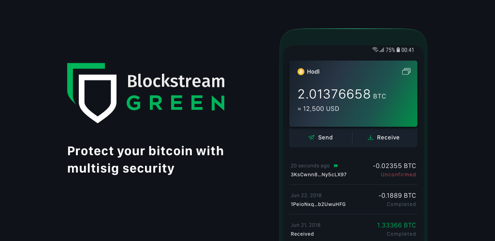
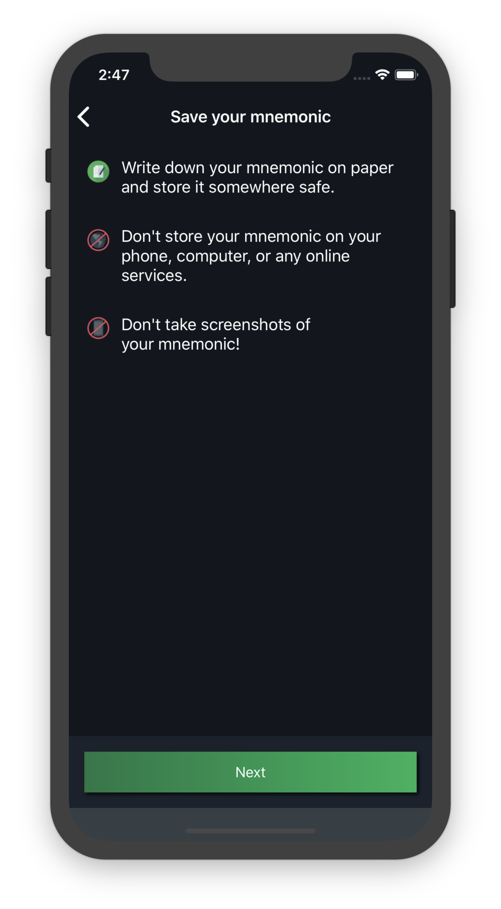
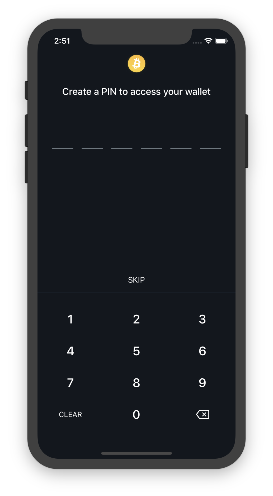

Getting Started¶
This guide is intended to answer all your questions about how to use Blockstream Green, whether you’re brand new to Bitcoin, just looking for what makes Blockstream Green wallets unique, or an experienced Bitcoiner ready to use our advanced features.
Table of Contents
Introduction to Blockstream Green¶
What Blockstream Green is for¶
Blockstream Green is a Bitcoin wallet - it’s a way for you to securely receive, store, and send Bitcoin.
You can use Blockstream Green to accept incoming payments, keep your coins safe for long periods of time, and to make payments and send Bitcoin to others.
Our wallet allows for convenient, instant access to your coins from a variety of platforms through mutually compatible applications.
We offer a variety of advanced features, such as letting our users set their own spending limits, watch-only access for observers, and our unique multisig security model. All of these (and more) are explained in more detail below.
What Blockstream Green isn’t for¶
It is just as important to understand what Blockstream Green isn’t for.
Blockstream Green is not a platform for buying and selling bitcoin. If you wish to buy or sell bitcoin, you will need to use another method. After you have bought some Bitcoin, you can send it to your Blockstream Green wallet and receive it by using the wallet’s receive function.
Blockstream Green only supports Bitcoin (which is denoted by the 3-letter ticker BTC).
We do not support any national currencies like USD or EUR. We do not support any other
cryptocurrencies, such as Peercoin or Dogecoin. Attempting to send anything other than
Bitcoin to an address generated by a Blockstream Green wallet can result in those coins
being permanently lost. This is completely out of our control, and we are unable to
provide support in this scenario. Before you send any coins to or from your Blockstream
Green wallet, be sure that both the sender and receiver are using the cryptocurrency
denoted by the ticker BTC.
Always be sure to check the 3-letter currency ticker before sending any coins, and only
use BTC with your Blockstream Green wallet.
Testnet Versions¶
Bitcoin has an alternative network known as ‘testnet’. This testnet network is just like the real Bitcoin network (which is known as ‘mainnet’), but with worthless coins, so that people can test features and applications without the risk of losing real coins.
Our wallets can connect to testnet by selecting testnet from the list of networks in the settings of the login page. If you are new to Bitcoin or Blockstream Green, we urge you to try things out on testnet first, so that you can get comfortable with how things work before you start using your real coins.
Wallets, addresses, and coins on the Bitcoin Testnet are completely separate from the real Bitcoin network. As such, you will need to create and secure a new mainnet wallet after you are finished with testing and wish to use the real Bitcoin network. Trying to use an address, or login credentials, or mnemonic from a testnet wallet or service on the Bitcoin mainnet will not work.
You’re in Control¶
Bitcoin is an exciting new technology with many advantages, but it comes with some extra responsibilities on the users’ end. As a Bitcoin wallet provider, we at Blockstream Green do not actually grant access to your Bitcoin - you do.
We are a non-custodial wallet. We provide you with the tools to manage your coins. Even if we disappear, you still retain access to your Bitcoin. This is contrasted with a custodial service, which holds coins on behalf of its users.
In a custodial system, the service is solely responsible for securing users coins. Examples include a bank or cryptocurrency exchange that has a verification process for new users, and then receives, stores, and sends coins on their users’ behalf, as long as they can verify their identity. This kind of service can deny users access or confiscate their coins at their own discretion or as a result of pressure from authorities.
This is not possible with Blockstream Green, as we are a non-custodial service. Each user exclusively controls their own Bitcoin, and it’s not possible for Blockstream Green to unilaterally move your coins. As long as you follow the instructions provided, you remain in complete control of your coins, and are solely responsible for retaining access to them.
Because of this, there are some differences between our services and user responsibilities and more traditional financial tools and services. Be sure to read the Setting Up a Wallet section for details; pay close attention to the recommended practices outlined there.
We’re Free! (But Bitcoin Isn’t)¶
Blockstream Green is a completely free service - we do not earn any revenue from our users, we neither collect, nor use any of their data.
It is important to understand that all Bitcoin transactions require a fee that is built in as part of the Bitcoin protocol. This fee is paid to the miners who run expensive equipment to secure the Bitcoin network and confirm users’ transactions.
There is no benefit to Blockstream Green for our users to pay high fees, and we do our best to provide our users with tools and strategies to keep their fees low. At certain times, however, factors beyond our control can lead to high fees when sending Bitcoin.
We do not ever receive these fees, and so have no way to return any fees to users after a transaction has been confirmed. We always show the fee that a transaction will pay so you can verify or change it before you make your transaction.
What’s Special About Blockstream Green¶
For those that are already familiar with how Bitcoin wallets typically work, you may know about some of the convenience, security, and privacy features that using Bitcoin offers.
Thanks to our unique multi-signature format, we’re able to offer all the usual privacy and freedom of typical Bitcoin wallets, but with extra security.
We use a format that requires signatures generated by 2 different keys, one of which is controlled by you, and one of which is controlled by our service. The service will sign transactions as long as Two-Factor Authentication (2FA) confirmation – a one time password delivered to you ideally on a separate device via Google Authenticator, email, SMS or call – is given. This means that even if someone gets a hold of your mnemonic, they still can’t steal your coins when you have 2FA enabled, unless they also compromise your 2FA method.
The process also stays trust minimized - even if, for some reason, the service cannot sign your transaction, you can independently move your coins without the service after a chosen period of time has passed.
This gets you the best of both worlds - the full financial sovereignty and trustlessness of a non-custodial Bitcoin wallet along with the extra layer of server-enforced two factor security.
Our design enables a lot of cool features, many of which are not available in other wallets:
Convenience
Easy access from anywhere
All access controlled by a single user mnemonic
A simple interface with current prices in your national currency
Fast PIN login
Watch-only logins for quick balance and transaction checking
Easy key sweeping to import coins
User supplied transaction memos
Default or Custom Transaction Fees
Increase fees after sending to speed up confirmation
Segregated Witness support for the lowest fees possible
Testnet network for functionality trials
Security
Multiple two-factor authentication options
Blockstream Green signature required to move coins
User-Controlled transaction limits and restrictions
Hardware wallet support (on Andorid)
Privacy
No KYC or identification of users necessary
User secrets are never transmitted to our servers or stored unencrypted on your device
Minimal information is stored by the service
Optional PGP encryption for email privacy
Accessibility via Tor
Setting Up a Wallet¶
Install the app¶
Blockstream Green apps can be accessed through the following operating systems and apps:
Operating Systems Supported |
Native Applications |
|---|---|
Android |
|
iOS |
Each of our apps can also be used on Bitcoin’s testnet, which we recommend for testing new features or becoming accustomed with the setup process to avoid accidental loss of coins.
Create a New Wallet¶
After you’ve installed the app, you’ll have the option to log in with an existing mnemonic
, or create a new wallet. To start, click on Create New Wallet.

At this point, the app will generate a 24-word mnemonic to function as a backup login method for your wallet. (Our wallets use the BIP39 standard for generating your mnemonic and BIP32 to derive private keys from that mnemonic).
{kind=link}
Danger
Your mnemonic is the single most important piece of information associated with your wallet.
You must write it down somewhere safe and secret - it’s your ultimate backup.
It must be kept safe and accessible because if your app gets uninstalled, or your device gets lost or stolen, or you forget your PIN, or your PIN gets reset, then your mnemonic will let you access your coins again. Even if we at Blockstream Green get shut down or disappear, you can still retain control of your coins as long as you have your mnemonic.
It must be kept secret because if someone else can figure out or steal your mnemonic, they may be able to steal your coins (although if you have Two-Factor Authentication set up, they will need to bypass that as well…but we’ll cover that in the Two-Factor Authentication section ).
To ensure that you safely recorded your mnemonic, you will be prompted to re-enter several of the words in the correct order.

Warning
Remember: we don’t store your mnemonic in the Blockstream Green database, so we are not able to tell what it is if you lose it.
Warning
It is also crucial to never send your mnemonic over email or text to anyone ( including Blockstream Green support).
Doing so can expose your mnemonic to theft, and put your coins at risk. If you ever forget and accidentally do this, we urge you to create a brand new wallet as soon as possible and move your coins to that new wallet.
Choose a PIN for this Wallet¶
After you have recorded and confirmed your mnemonic, you will be able to choose a PIN. This is a 6 digit number that can be used to quickly access your wallet on that device and on that network.
{kind=link}
In addition to the PIN you may also use iOS TouchID or Android’s Authentication to ease access to the wallet you just created or restored. You can set this up from settings.
Warning
It is important to keep your PIN safe and secret. If it is lost, your only option to re-access your wallet will be through your mnemonic.
Your PIN is specific to the device and network that it is created on. It is possible to access your wallet from multiple devices by using your mnemonic, but you will create a separate PIN for each device, so they might not be the same.
As a security feature, your device will reset your PIN if you or someone else enters the wrong PIN 3 times in a row. This is to prevent a malicious party from continually guessing until they get your PIN right.
If your PIN is reset, you will need to enter your mnemonic through Restore Green
Wallet on the “Onboarding” screen, which will allow you to create a new PIN for that
device.
Set up Two-Factor Authentication¶
Finally, after you have recorded and confirmed your mnemonic and set your PIN, you will be prompted to choose a Two-Factor Authentication method. A Two-Factor Authentication method is a second layer of security that a wallet’s owner must confirm before sending coins or making other critical changes in settings.

Tip
While optional, we urge you to activate at least one Two-Factor Authentication method. Ideally, you should add at least 2 different Two-Factor Authentication options.
For various reasons, our users sometimes lose access to one of their Two-Factor Authentication methods, and this can be very inconvenient.
Tip
You can mitigate this risk by having at least 2 different Two-Factor Authentication methods in place.
This way, if you suddenly lose access to one, you can still retain full access to your wallet, and then reset the lost Two-Factor Authentication method (for more details on this, see the section for changing a Two-Factor authentication method).
Using Two-Factor Authentication is simple: whenever you take an action that requires Two-Factor Authentication authorization (sending a transaction, or changing your Two-Factor Authentication settings), you will confirm the action by providing a confirmation code that you will receive via your preferred Two-Factor Authentication method.
Attention
Two-Factor Authentication is most secure when it is separated from the wallet device.
Best Practices for Creating a New Wallet¶
Creating a wallet for the first time is a straightforward process, but there are a couple of common mistakes that new Bitcoin users make.
Danger
Not properly recording your mnemonic at the beginning might lead you to lose your funds.
Though it might be inconvenient at the time, and you might be excited to use the wallet immediately, it is very important to take the time to properly record your mnemonic and safely store it.
Some other wallets allow users to start transacting without recording their mnemonic. While this might seem OK, we believe that this is risky and irresponsible.
It is very easy for users to start accepting and sending bitcoins and delay properly recording their mnemonic. Then, when something goes wrong in the future (their phone breaks, the PIN is entered incorrectly, etc), they suddenly lose access to their their coins.
Take extra-care to safely note and store your 24-words mnemonic. Please take this process very seriously, and give it the time and attention that it needs.
—
Danger
Using a throw-away email address for your Two-Factor Authentication can also result in loss of coins!
Unless you immediately create more permanent alternative Two-Factor Authentication methods (which we recommend anyway), or ensure you retain access to this throw-away email address losing access to your email can be very inconvenient.
Make sure you use an email address that you will be able to access in the future.
—
Danger
Creating a new wallet while there is an existing wallet on the app could prevent you from being able to access this new wallet, unless you safely store this new wallet mnemonic.
You will be allowed to create as many wallets as you like on your Blockstream Green app, but it can only store one PIN-protected mnemonic at a time. This means that any new wallets won’t be PIN-accessible on that device, and in the future must be logged into using the full mnemonic.
If you wish to create a new wallet, and have your app store a PIN for the new one, you will need to first disable the PIN on the original wallet. You can do this by entering an incorrect PIN 3 times in a row, or from settings after you have logged in.
Basic Usage¶
Logging In¶
After you have created your wallet, you will be presented with a login screen when you open the app.

Here, you can enter your PIN, which will grant you access to your wallet. This will work in the vast majority of situations.
Attention
If you have forgotten your PIN, you will need to enter your 24-word mnemonic to access your wallet. After you have done this, you will be prompted to create a new PIN to easily access the wallet you just restored.
You will also need to access your wallet with your mnemonic if you or someone else has incorrectly entered your PIN 3 times in a row. In this scenario, your app will reset your PIN and require your mnemonic. This is a security feature to prevent a malicious party from continually guessing your PIN until they get it right.
Balance and Transaction List¶
The main screen you’ll be using in Blockstream Green will display your wallet’s balance in Bitcoin and its approximate value in your selected fiat currency.
Directly below this will be the send and receive buttons.
You can also view from this screen all of your wallet’s incoming and outgoing transactions. Transactions are listed in reverse chronological order, starting with the most recent transactions at the top.
You’ll be able to see the date, time, amount (in Bitcoin and fiat currency), and confirmation status of any transactions. You can also select any transaction to get more information about it, such as its Transaction Hash, which can be used as a proof-of-payment.
Receiving Transactions¶
To receive Bitcoin, all you need to do is provide a receiving address to the sender.

A Bitcoin receiving address is a string of numbers and letters. You can create a receiving address by selecting “Receive” from the main screen. Your wallet will generate a new receiving address each time you prompt it for one. While it is possible to reuse old addresses, we strongly advise against this because it lessens your privacy.
Once you can see what your new address is, you’ll need to communicate it to the sender. If you need to send over a distance, a text message or email is an effective way to do it.
If you are physically beside the person who will be sending you Bitcoin, another option is to use the QR code, which the sender can scan to get the receiving address. This is really convenient if the sender is using a mobile wallet.
Once someone has sent a transaction to your Blockstream Green wallet, it should appear in your transaction list page. At first, it will be labelled “unconfirmed”. At this point, you should not consider the coins to have been received, because the transaction may still get overwritten or canceled. The transaction will over time accumulate “confirmations” as new blocks are mined in the Bitcoin network. Once your transaction reaches 6 confirmations, your wallet will list it as “confirmed” and you can consider the coins received.
Sending Transactions¶
To send a transaction, select “Send” from the main screen.
You will need to get the receiving address from the recipient, and enter it (either by typing or pasting it in, or by scanning the receiver’s QR code).

Then, you can input the amount of Bitcoin that you want to send, and hit send.

Your wallet will also automatically calculate a fee for your transaction, which is necessary to have the network accept it.

After you have sent a transaction, you need to wait for the network to confirm it, which can take a bit of time. You can check the status of a transaction by looking into your transaction history on the main screen.
What Happens After a Transaction Is Sent¶
Many new users sometimes wonder why they need to wait for Bitcoin transactions to complete. Why don’t they happen instantly?
This is because after the transaction has been sent, the sender and receiver’s jobs are done, but there are still several steps that need to be completed behind the scenes.
To become confirmed, a transaction needs to be included in a block. Blocks are created every 10 minutes on average, but this is only an average, and can vary from time to time. Sometimes blocks are found much more quickly (several within a minute) or much slower (can take over an hour).
Depending on how busy the network is, and how high a fee the sender paid, the transaction may not be included in the next block.
Once the transaction has been included in a block, it has 1 “confirmation”. Every block mined after that earns it another confirmation. The industry standard is to wait for 6 confirmations before considering a transaction to be confirmed, at which point you can be confident that it has been received and can not be reversed or redirected. You will be able to see the confirmations accumulate on your wallet’s default screen.
Our Multisignature Model¶
Blockstream Green wallets use a special transaction format different from most other Bitcoin wallets.
Most other storage services in Bitcoin are either “custodial” or “non-custodial without Two-Factor Authentication security”.
Custodial services, such as exchanges, hold your Bitcoin for you. This also means that they can confiscate your coins at will, or if they get hacked, your coins can get stolen. It also usually means KYC identification, and risks of privacy loss.
Other non-custodial wallets do not have those issues, but it also means that if someone steals your mnemonic or gain access to your wallet, they can steal all of your coins. The secrecy of your mnemonic is the only thing protecting your coins with these wallets.
With Blockstream Green, you get the benefits of both types.
This is possible because coins in Blockstream Green wallets have two different spend conditions.
The first way to spend coins is using signatures from 2 different keys to send coins. One is held by the user in the form of the mnemonic, which the service never knows. The other is stored on our server, and we sign your transactions with it after any Two-Factor Authentication you have enabled verifies the transaction.
This means that, unlike custodial solutions, we can never steal your coins, since we don’t know your mnemonic. Even if we get hacked, or taken over by a government entity, or something else catastrophic happens, no one can steal your coins.
On the user side, even if someone steals your mnemonic, they cannot spend your coins unless they can access your Two-Factor Authentication. This is the type of security that other wallets do not offer.
The second way to spend coins becomes available after your two factor recovery period expires. Once this happens, you can spend your coins without our service needing to also sign. This is to ensure that no matter what happens, you can always get your coins back.
Our signature scheme also allows us to enforce Two-Factor Authentication security, Two- Factor Authentication spending thresholds, and other extra options. These features do not exist in typical Bitcoin wallets.
Redeposits¶
As explained above, coins in your main Blockstream Green wallet (or a 2of2 simple account) require 2 signatures to be spent: one from you and one from Blockstream Green. In order to protect you from loss of access to your coins should Blockstream Green become unavailable, there is an alternative spend condition which requires only the user’s signature, provided that a certain period of time has passed.
If the service becomes unavailable, you simply wait for the specified period (90 days by default), then sign and send the transaction using our open source recovery tool garecovery.
After the expiry period passes, any other limits placed on your spending in Blockstream Green, such as Two-Factor Authentication requirements, cease to be enforceable by the service.
At this point the wallet will prompt you to redeposit the coins by sending them to yourself (If you don’t log in to the wallet during this time, and you have email notifications enabled, the service will email you a reminder as the expiry date gets closer). The creation of the redeposit transaction resets the expiry period, thereby re-protecting the coins by once again requiring a Blockstream Green signature to spend them.
Keep in mind that this redeposit transaction is a regular Bitcoin transaction, and as such is subject to the usual transaction fees for the miners.
You can also adjust the expiry period in your settings if you wish it to be longer or shorter. A shorter expiry means you need to redeposit more often to maintain your Two- Factor Authentication security but don’t have to wait as long to recover; a longer expiry lets you redeposit less often, but you have to wait longer if your Two-Factor Authentication becomes inaccessible.